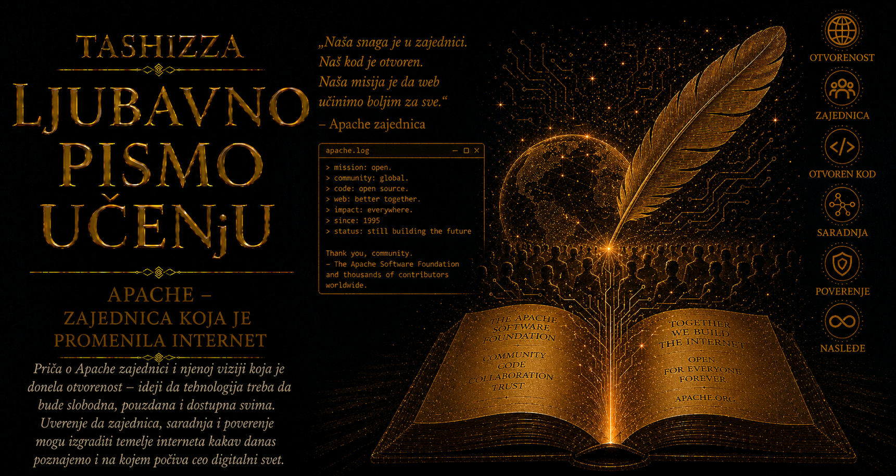

Ljubavno pismo učenju

Sredinom devedesetih godina dvadesetog veka World Wide Web je ubrzano prerastao okvire univerzitetskih laboratorija. Na mreži su se pojavljivale novinske stranice, elektronski časopisi, poslovne prezentacije i prve lične biblioteke, dok je broj ljudi koji su želeli da objavljuju sadržaj rastao brže od infrastrukture sposobne da ga pouzdano posluži. Iza svake stranice nalazio se web server, program koji prima zahtev pregledača, pronalazi traženi dokument i šalje ga preko mreže. Od njegove stabilnosti zavisilo je da li će sajt ostati dostupan, bez obzira na kvalitet sadržaja koji je čuvao.
Jedan od najznačajnijih servera ranog Veba bio je NCSA HTTPd, razvijen u Nacionalnom centru za superračunarske primene Univerziteta Ilinois. Kada je njegov glavni autor Rob Makul napustio NCSA 1994. godine, razvoj programa gotovo se zaustavio, iako su ga hiljade administratora već koristile. Svaki od njih počeo je da čuva sopstvene zakrpe: jednu za bezbednosni propust, drugu za određeni operativni sistem, treću za funkciju koja je nedostajala. Korisna rešenja ostajala su rasuta među ljudima koji često nisu znali jedni za druge, pa se isti problemi rešavali više puta, bez zajedničkog mesta na kojem bi izmene bile proverene i objedinjene.
Početkom 1995. mala grupa administratora odlučila je da prekine takvo rasipanje znanja. Brajan Belendorf i Klif Skolnik organizovali su poštansku listu i prostor za razmenu datoteka, a priključili su im se Roj Filding, Rob Hartil, Dejvid Robinson, Rendi Terbuš, Robert Tau, Endru Vilson i drugi saradnici. Njihova početna namera bila je skromna i sasvim praktična: prikupiti najbolje zakrpe za NCSA HTTPd, međusobno ih proveriti i objaviti pouzdanu verziju dostupnu svima. Iz te saradnje nastao je Apache, projekat čije ime podseća na njegove početke među zakrpama, ali i izražava poštovanje prema apačkim narodima, njihovoj istrajnosti i sposobnosti da očuvaju zajednicu.
Prva javna verzija pojavila se u aprilu 1995, dok je Apache 1.0 objavljen 1. decembra iste godine, posle intenzivnog testiranja, prenošenja na različite platforme i izrade obimnije dokumentacije. Za manje od godinu dana Apache je prema tadašnjim istraživanjima pretekao NCSA HTTPd i postao najzastupljeniji web server na internetu. Brzina tog uspona pokazala je koliko je svetu bio potreban program koji se razvija istim ritmom kao Veb, čije se greške mogu prijaviti, čije se odluke mogu razumeti i čiji se izvorni kod može prilagoditi bez čekanja na dozvolu jednog vlasnika.
Presudnu ulogu u njegovom razvoju imala je modularna arhitektura. Osnovni server obavljao je središnji posao primanja i usmeravanja zahteva, dok su se dodatne mogućnosti uključivale modulima. Jedan modul upravljao je autentifikacijom, drugi šifrovanim vezama, treći preusmeravanjem adresa, četvrti posredovanjem između korisnika i drugih servera, a naredni izvršavanjem programa koji stvaraju dinamičke stranice. Administrator je mogao da sastavi sistem prema stvarnim potrebama ustanove, uključi potrebne funkcije i razvije novo proširenje kada postojeća rešenja nisu bila dovoljna.
Apache je tako postao mesto susreta mreže, operativnog sistema, programskih jezika i baza podataka. Omogućio je da jezici poput Perla i PHP-a primaju podatke iz obrazaca, razgovaraju sa bazama i stvaraju stranicu u trenutku korisničkog zahteva. Zajedno sa Linuxom, MySQL-om i PHP-om obrazovao je okruženje poznato kao LAMP, na kojem su podizani portali, forumi, blogovi, enciklopedije, obrazovne platforme i prve internet prodavnice. Mala škola, nezavisni izdavač i velika kompanija mogli su koristiti isti tehnološki temelj, bez plaćanja dozvole za svaki server i bez vezivanja budućnosti svog sajta za jednog proizvođača.
Podjednako važna bila je društvena arhitektura projekta. Razvoj se odvijao preko javnih poštanskih lista, predlozi su prolazili pregled drugih programera, a uticaj se sticao radom: pisanjem koda, testiranjem, dokumentovanjem, ispravljanjem grešaka i pomaganjem korisnicima. Ozbiljan prigovor zahtevao je obrazloženje, a odgovornost se postepeno poveravala saradnicima čiji je doprinos stekao poverenje zajednice. Iz te prakse razvio se Apache Way, način upravljanja zasnovan na otvorenim raspravama, tehničkim argumentima, prenošenju znanja i nastojanju da projekat nikada ne postane zavisan od jednog čoveka.
Takav poredak zahtevao je strpljenje, jer dogovor među ljudima sa različitim iskustvima ponekad traje duže od odluke jednog rukovodioca. Ipak, program namenjen hiljadama sistema nije smeo da zavisi od neproverene zamisli pojedinca. Raznovrsnost učesnika postala je oblik tehničke provere: promena koja dobro radi na jednoj platformi morala je da izdrži iskustvo administratora koji je koriste u sasvim drugačijim uslovima. Zajednica je tako od razlika među operativnim sistemima, institucijama i kulturama stvarala zajedničko znanje.
Apacheova otvorenost podrazumevala je i odgovornost prema bezbednosti. Web server je neprestano izložen zahtevima nepoznatih korisnika, pa greška u obradi putanje, zaglavlja ili posredničkog zahteva može ugroziti podatke i čitave sisteme. Tokom duge istorije Apache je imao ozbiljne ranjivosti, ali je zajednica razvila javnu evidenciju propusta, postupke odgovornog prijavljivanja, koordinisana izdanja ispravki i precizna obaveštenja administratorima. Otvoreni izvor pružao je mogućnost zajedničke provere, dok su stvarnu sigurnost gradili stručnost, transparentnost i spremnost da se greška prizna i popravi.
Godine 1999. članovi prvobitne grupe osnovali su Apache Software Foundation, kako bi projektu obezbedili pravnu, organizacionu i finansijsku stabilnost. Fondacija je ubrzo postala dom čitavoj porodici otvorenih projekata iz oblasti web aplikacija, distribuiranih sistema, pretraživanja, obrade podataka i razvojnih alata. Svaki projekat dobio je sopstvenu zajednicu i telo odgovorno za njegov smer, dok je Fondacija čuvala zajednički okvir i nezavisnost od pojedinačnih kompanija. Time je iskustvo stečeno oko jednog web servera preraslo u model dugoročnog održavanja digitalnih dobara.
Apache je vremenom dobio snažne konkurente, dok su cloud platforme, kontejneri i mreže za isporuku sadržaja promenili način na koji se web aplikacije postavljaju. Njegova nekadašnja tržišna nadmoć postepeno se smanjivala, ali projekat nije ostao zarobljen u sopstvenoj prošlosti. Savremena stabilna grana 2.4 podržava šifrovane veze, HTTP/2, virtuelne domaćine, dinamičko učitavanje modula, obrnuto posredovanje, keširanje i raspoređivanje opterećenja. Apache i dalje radi na ličnim sajtovima, univerzitetskim i poslovnim mrežama, u složenim aplikacionim okruženjima i iza drugih posrednika, često daleko od pogleda krajnjeg korisnika.
Njegovo najdublje nasleđe prevazilazi broj instalacija. Apache je pokazao da se kritični deo internet infrastrukture može razvijati javno, preko granica država i kompanija, bez centralnog vlasnika koji određuje ko sme da ga koristi. Zakrpa jednog nepoznatog saradnika mogla je postati deo sistema od kojeg zavise milioni ljudi, pod uslovom da postoji zajednica sposobna da je proveri, razume i odgovorno prihvati. Tehnička arhitektura omogućavala je širenje programa, dok je otvorena kultura omogućavala širenje kruga njegovih stvaralaca.
U vremenu koje često slavi usamljenog genija, Apache čuva drugačiju sliku stvaralaštva. Njegov autor je zajednica, a njegova biografija sastavljena je od hiljada razgovora, zakrpa, testova, neslaganja i dogovora. Pokazao je da znanje postaje snažnije kada se deli, da autoritet može izrastati iz doprinosa i poverenja, i da infrastruktura od opšteg značaja može ostati otvorena čak i kada se oko nje razviju velika tržišta. Internet je zahvaljujući Apacheu dobio pouzdan server, ali je dobio i jednu od svojih najvažnijih lekcija o saradnji.